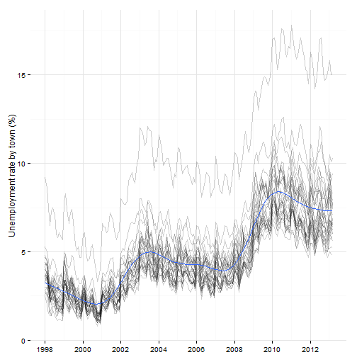
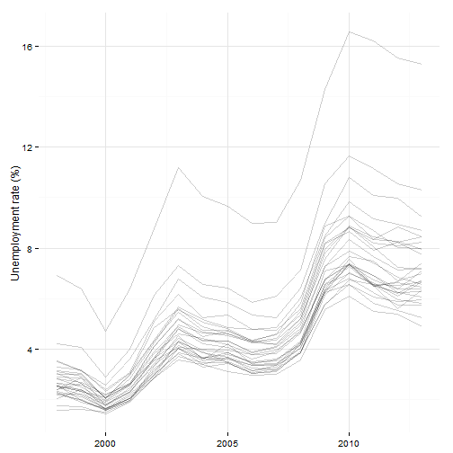
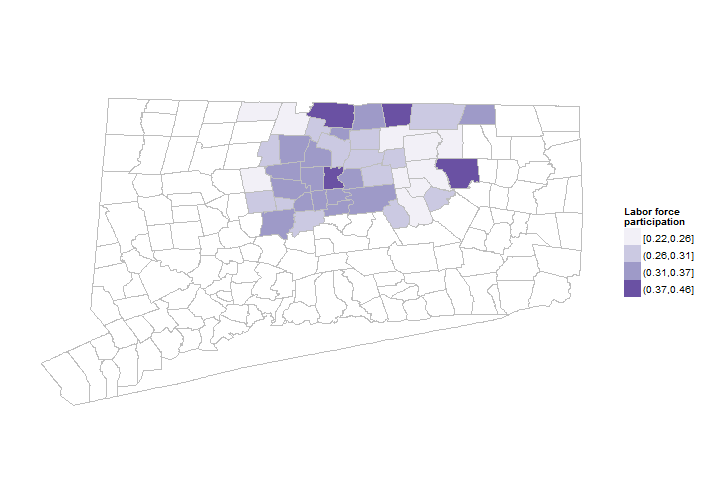
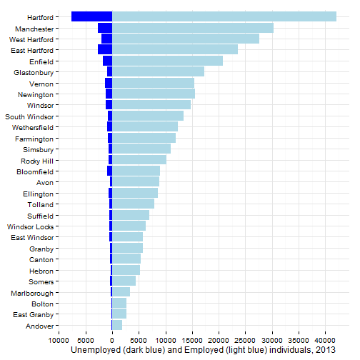
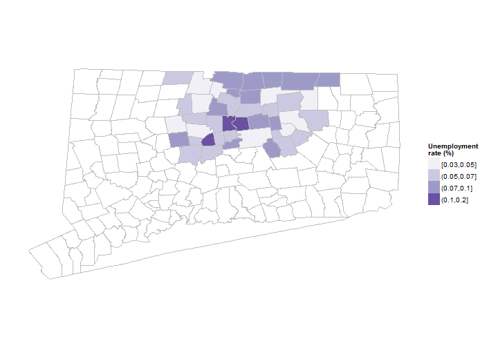
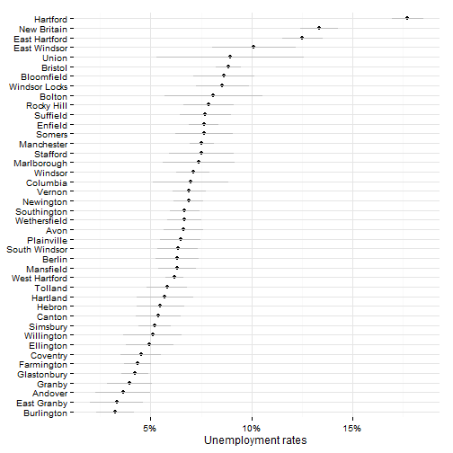

Hartford regional data and indicators
This section covers indicators related to unemployment and the labor force in the Hartford area.
Data on unemployment comes from DoL and ACS.
Unemployment rates are the single most commonly-used indicator in the reports we reviewed; below are references for some.
The sample results are for all towns in Hartford and Tolland Counties since it is easier to extract ACS data that way.
Unemployment rates from the ACS (2007 - 2011 5-year estimates)

Margins of error for the same.

Labor force participation rates

Margins of error for labor force participation Why are Somers, Mansfield and Suffield so high?

Unemployment by neighborhood

Labor force participation by neighborhood

Then get DoL data
Look at table S2301 for data on labor force participation - old and young